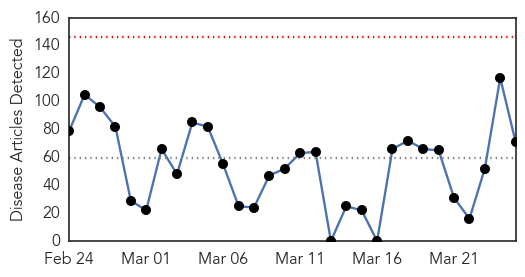
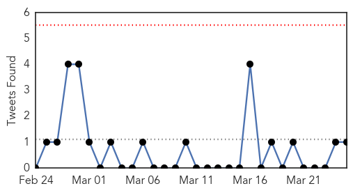
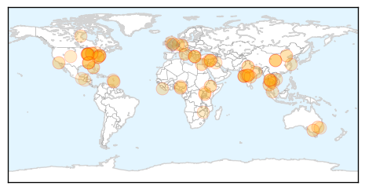
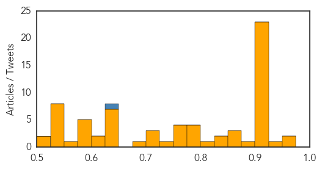

Toggle navigation
Early Warning
Daily Alerts
Unknown
Mar 25, 2015
Compare to:
-
Dengue Fever
Hemmorhagic Fever
Mold/Fungal Infection
Influenza
Meningitis
Pertussis / Whooping Cough
Middle East Respiratory Syndrome
Cholera
Hepatitis
Chikungunya
Yellow Fever
Bubonic Plague
West Nile Virus
Swine Flu
Ebola
Measles
Mumps
30 Day Trends
Web: 0
alerts
, 0
warnings
Twitter: 0
alerts
, 0
warnings
Top Articles:
Showing top 50 articles...
0.974
Still no end to Erie County flu season
0.967
Campaign to get rid of lymphatic filariasis
0.945
Tuberculosis in decline since 1991
0.925
Leprosy, TB curable – Experts
0.917
Chicago Tribune
0.917
Chicago Tribune
0.917
Chicago Tribune
0.917
Chicago Tribune
0.917
Chicago Tribune
0.917
Chicago Tribune
0.917
Chicago Tribune
0.917
Chicago Tribune
0.917
Chicago Tribune
0.917
Chicago Tribune
0.917
Chicago Tribune
0.917
Chicago Tribune
0.917
Chicago Tribune
0.917
Chicago Tribune
0.917
Chicago Tribune
0.917
Chicago Tribune
0.917
Chicago Tribune
0.917
Chicago Tribune
0.910
The world windows to Thailand
0.910
The world windows to Thailand
0.910
The world windows to Thailand
0.910
The world windows to Thailand
0.884
The unseen world of childhood TB
0.863
Govt data reveals sharp rise in TB cases
0.854
Federal government looks into Lyme disease
0.853
40,000 New TB Cases in Telangana Every Year
0.835
Sending out a message of cure, hope
0.825
India ‘failing to tackle’ TB crisis: journal article
0.820
China to aid African Union in disease control
0.790
India failing to tackle ‘massive TB crisis’
0.785
‘Lack of awareness cause for high mortality rates’
0.781
Midsomer Norton vet gives advice to pet owners over Alabama rot
0.777
Birmingham Schools Warn Parents Of Outbreak Of Chickenpox, Recommend Non-Immunized Stay Home « CBS Detroit
0.773
Birmingham Schools reports chickenpox outbreak
0.764
Homosexuals in Newfoundland hit by 'astronomical' syphilis outbreak
0.762
Worms Can Invade Your Brain from Eating This Common Food
0.758
Medical profession losing its aura of sanctity with the rising cases of malpractice and negligence
0.741
Election Watch: Candidates say how they will support Canowindra Hospital
0.717
Liberia records highest infant mortality rate
0.716
New pox discovered in Eastern Europe, but not deadly
0.712
MaritiemeVacaturebank.nl
0.687
Civic body gears up to address MDR-TB threat
0.649
1075 Homewood High School students and faculty tested for tuberculosis
0.645
War pushing water shortages to breaking point in the Middle East, says ICRC report
0.644
640 more TB cases from 2013 to 2014
0.639
Vietnam to produce 6-in-1 vaccines to quench shortage
Top Tweets:
0.645
Yes I would. I'd also give it to hospitalised flu patients & those at risk of severe flu. Lifesaving drug.
Web/News Articles

Tweets

Article Locations

Article Confidences
